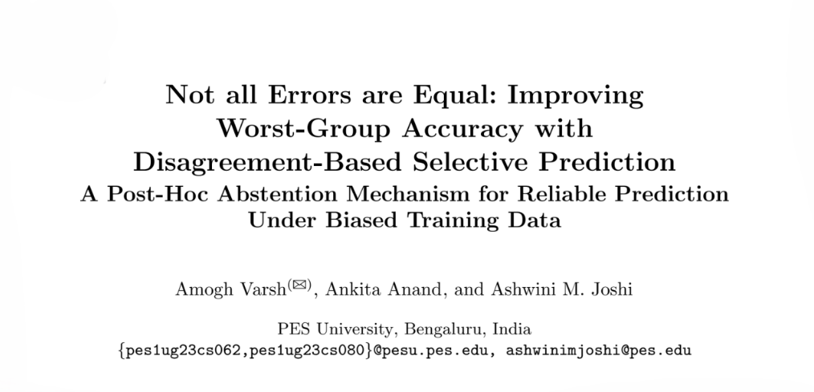
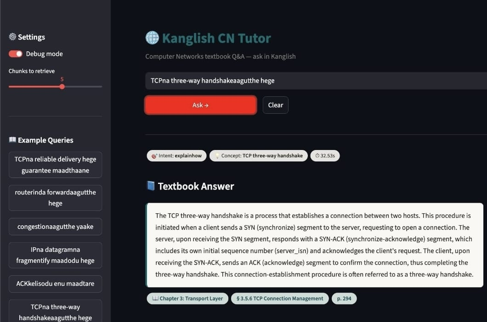
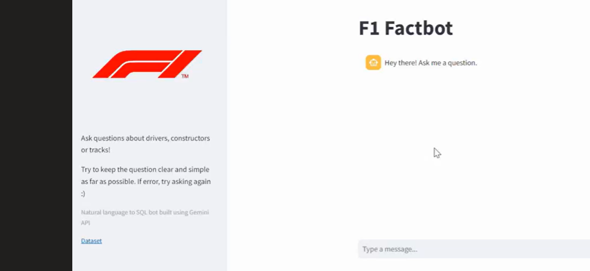

Work
Projects

NLP · Education
Code-Mixed Educational QA
A retrieval-based QA system for textbooks, supporting questions in Kanglish and answers in both English and Kanglish, with hierarchical retrieval over parsed textbook content.

Teaching Assistantships
PESU CS342AA2 · Aug–Dec 2026
Data Analytics
Designed assignments and conducted hands-on sessions and labs for 500+ students, covering exploratory data analysis, correlation, PCA, and statistical methods.
PESU CS251B · Jan–May 2026
Microprocessors & Computer Architecture
Conducted laboratory sessions and contributed course material on TPU architecture and machine-learning accelerators.
Work in progress
Research · Multimodal AI
Token Compression & VLM Caching
Exploring efficient approaches to visual token representation and information reuse for resource-constrained video understanding.
Computer vision
Weld Defect Analysis
Working on automated analysis of radiographic weld images, including defect classification and spatial analysis.